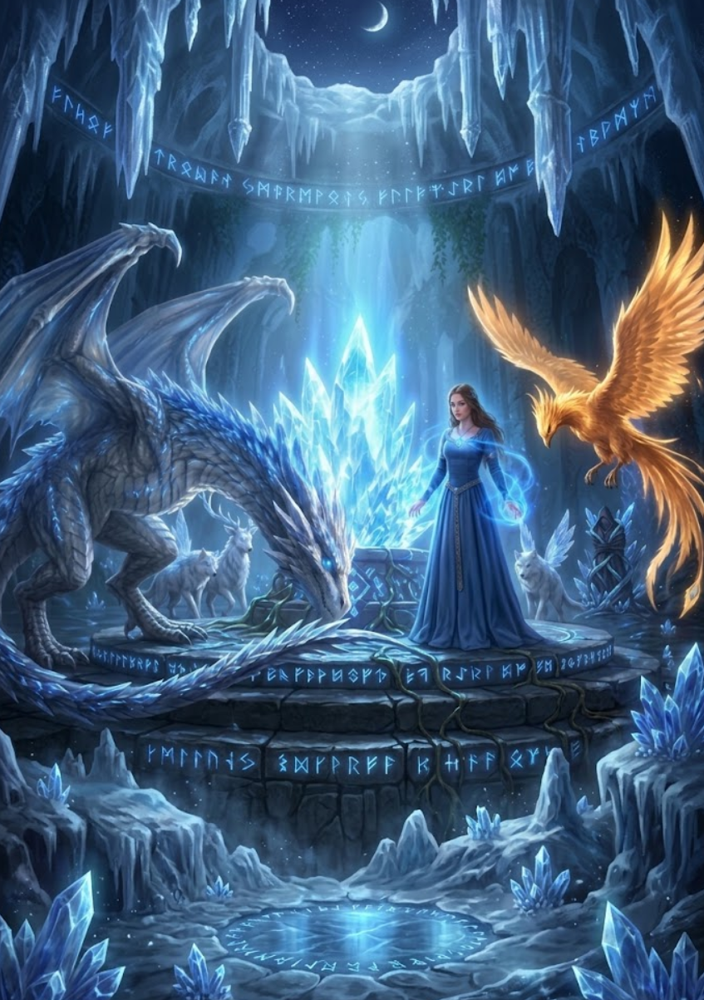

3/3
Camino Final: La Nueva Guardiana
🔊 Narración:
En lugar de pelear ciegamente, Ayla une su energía a la de las criaturas. El Corazón de Aether reacciona a su valentía, emitiendo un destello cegador que destruye la magia oscura y expulsa al encapuchado para siempre.
La criatura plateada se inclina ante ella. Ayla ha salvado la magia y se ha convertido en la nueva Guardiana de Varnok.
♦ ───── ♦
El Bosque esta Seguro
Ayla y las criaturas cuidarán de él